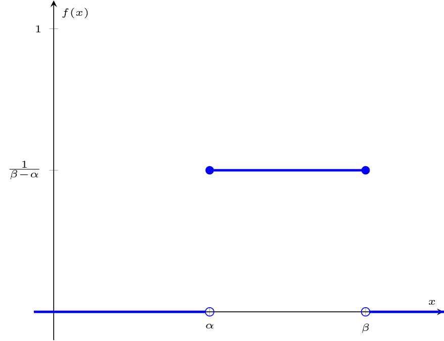
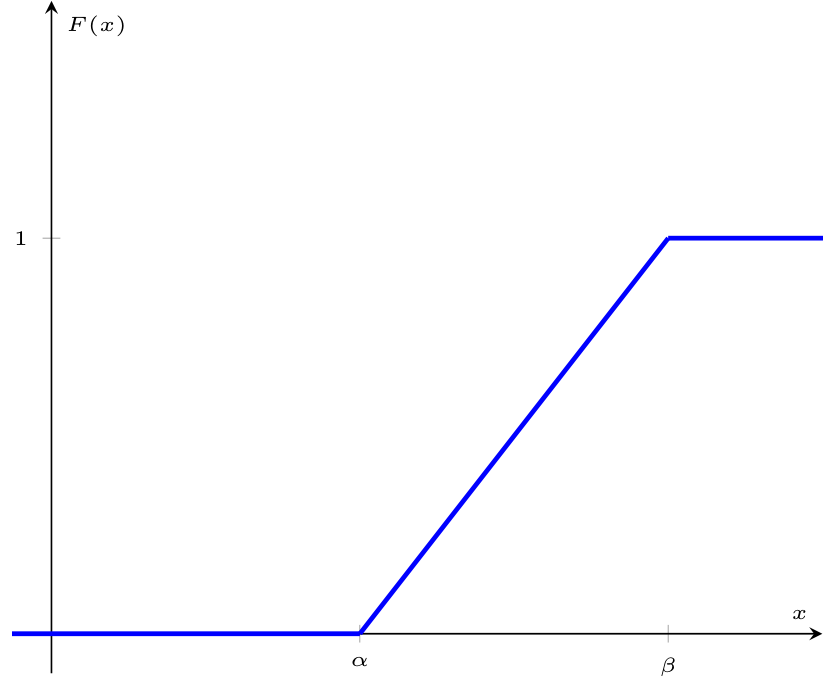
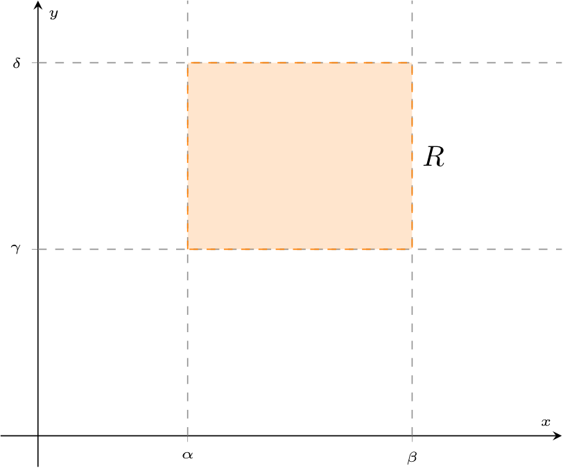
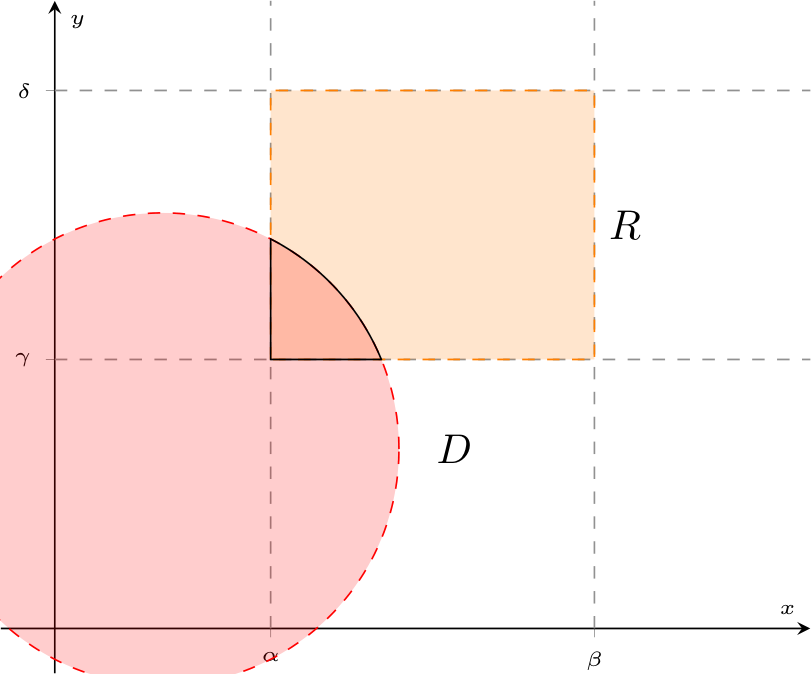
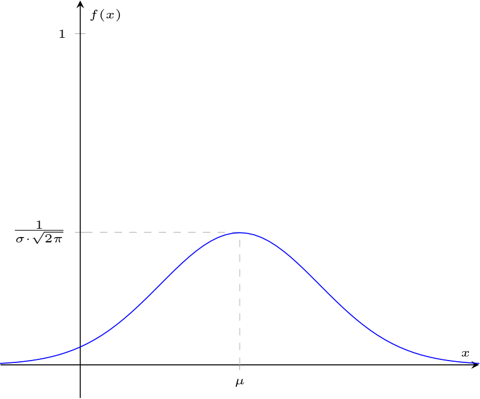

Definizione - Variabile casuale uniforme
Una variabile casuale continua \( X\) si definisce uniforme di parametri \( \alpha\) e \( \beta\) (\( X \sim U(\alpha, \beta)\) con \( \alpha, \beta \in \mathbb{R}\) e \( \alpha \lt \beta\)) se, in un certo intervallo \( [\alpha, \beta]\) essa assume lo stesso valore di probabilità \( k\) e \( 0\) altrove, ovvero si ha che la funzione di densità sarà uguale a \[ f(x) = \left\{ \begin{array}{ll} k & \text{se} \ x \in [\alpha, \beta] \\ 0 & \text{altrove} \end{array} \right. \] Affinchè \( f\) sia una funzione di densità valida, si ha che \( P(X \in [c, d])\), con \( [c, d] \subseteq [\alpha, \beta]\) Considerando un intervallo \( [c, d]\) sottoinsieme di \( [\alpha, \beta]\), si ha che la probabilità di \( X \in [c,d]\) sarà uguale a \[ \begin{array}{ccl} P(X \in [c, d]) & = & \int_c^d f(x) \ dx \\ & = & \int_c^d \frac{1}{\beta - \alpha} \ dx \\ & = & \frac{1}{\beta - \alpha} \cdot (d - c) \\ & = & \frac{d - c}{\beta - \alpha} \\ \end{array} \] ovvero si ha che è dato dal rapporto tra la lunghezza di \( [c,d]\) e \( [\alpha, \beta]\). Valore atteso Il valore atteso di una v. c. uniforme di parametri \( \alpha\) e \( \beta\) è uguale a \[ \begin{array}{ccl} E[X] & = & \int_{-\infty}^{+\infty} x \cdot f(x) \ dx \\ & = & \int_{\alpha}^{\beta} x \cdot \frac{1}{\beta - \alpha} \ dx \\ & = & \frac{1}{\beta - \alpha} \cdot \left[ \frac{x^2}{2} \right]^\beta_\alpha \\ & = & \frac{\beta^2 - \alpha^2}{2 \cdot (\beta - \alpha)} \\ & = & \frac{\beta + \alpha}{2} \end{array} \]Varianza La varianza di una v. c. uniforme di parametri \( \alpha\) e \( \beta\) è calcolabile come \[ Var(X) = E\left[X^2\right] - \left( E[X] \right)^2 \] È necessario calcolare quindi \( E\left[X^2\right]\) che è uguale a \[ \begin{array}{ccl} E\left[X^2\right] & = & \int_{-\infty}^{+\infty} x^2 \cdot f(x) \ dx \\ & = & \int_\alpha^\beta \frac{x^2}{\beta - \alpha} \ dx \\ & = & \frac{1}{\beta - \alpha} \cdot \left[ \frac{x^3}{3} \right]^\beta_\alpha \\ & = & \frac{1}{\beta - \alpha} \cdot \frac{\beta^3 - \alpha^3}{3} \\ & = & \frac{\beta^3 - \alpha^3}{3 \cdot (\beta - \alpha)} \\ & = & \frac{(\beta - \alpha) \cdot (\alpha^2 + \beta^2 + \alpha \cdot \beta)}{3 \cdot (\beta - \alpha)} \\ & = & \frac{\alpha^2 + \beta^2 + \alpha \cdot \beta}{3} \end{array} \] È ora possibile calcolare la varianza, ovvero \[ \begin{array}{ccl} Var(X) & = & E\left[X^2\right] - \left( E[X] \right)^2 \\ & = & \frac{\alpha^2 + \beta^2 + \alpha \cdot \beta}{3} - \left( \frac{\beta + \alpha}{2} \right)^2 \\ & = & \frac{\alpha^2 + \beta^2 + \alpha \cdot \beta}{3} - \frac{\beta^2 + \alpha^2 + 2 \cdot \alpha \cdot \beta}{4} \\ & = & \frac{\alpha^2 + \beta^2 - 2 \cdot \alpha \cdot \beta }{12} \\ & = & \frac{(\beta - \alpha)^2}{12} \end{array} \]Funzione di ripartizione La funzione di ripartizione per una v. c. uniforme di parametri \( \alpha\) e \( \beta\) è calcolabile come \[ \begin{array}{ccl} F(a) & = & P(X \leq a) \\ & = & \int_{-\infty}^a f(x) \ dx \\ & = & \left\{ \begin{array}{ll} \int_{-\infty}^a 0 \ dx & \text{se} \ a \lt \alpha \\ \int_{-\infty}^\alpha 0 \ dx + \int_{\alpha}^a \frac{1}{\beta - \alpha} \ dx & \text{se} \ \alpha \leq a \leq \beta \\ \int_{-\infty}^\alpha 0 \ dx + \int_{\alpha}^{\beta} \frac{1}{\beta - \alpha} \ dx + \int_{\beta}^{a} 0 \ dx & \text{se} \ a \gt b \end{array} \right. \\ & = & \left\{ \begin{array}{ll} 0 & \text{se} \ a \lt \alpha \\ \frac{a - \alpha}{\beta - \alpha} \ dx & \text{se} \ \alpha \leq a \leq \beta \\ 1 & \text{se} \ a \gt b \end{array} \right. \end{array} \]
- \( f(x) \geq 0\) per ogni \( x \in \mathbb{R}\), e ciò implica che \[ k \geq 0 \]
- considerando \( \mathbb{R}\), si ha che \[ \int_{-\infty}^{+\infty} f(x) \ dx = 1 \] che implica \begin{aligned} & \int_{-\infty}^{\alpha} 0 \ dx + \int_\alpha^\beta k \ dx + \int_\beta^{+\infty} 0 \ dx = 1 & \iff \\ & k \cdot (\beta - \alpha) = 1 & \iff \\ & k = \frac{1}{\beta - \alpha} \end{aligned}


Esempio - Utilizzo di una v. c. uniforme
Considerando un autobus che passa in un istante casuale tra le 6:50 AM e le 7:20 AM, calcolare
- la probabilità che l'autobus passi dalle 7:00 AM in poi;
- la probabilità che l'autobus passi dalle 7:05 AM in poi;
- la probabilità che l'autobus passi alle 7:00 AM.
Definizione - Problemi sulla probabilità che un sistema in serie e parallelo funzioni fino ad un istante \( a\)
Utilizzando le variabili casuali continue, è possibile descrivere meglio il funzionamento di dispositivi in serie ed in parallelo, descrivendo la probabilità di funzionamento fino ad un certo istante. Dispositivi in serie Nel caso di \( n\) dispositivi in serie, caratterizzati da \( n\) variabili casuali continue che descrivono la probabilità di funzionamento allo scorrere del tempo \( X_1, \ldots, X_n\) si ha che il sistema funziona fino a quando ogni dispositivo funziona, ovvero si ha che \[ T = \text{"Tempo di funzionamento del sistema"} \] è uguale al minimo tra tutti i tempi di funzionamento, ovvero \[ T = min(X_1, \ldots, X_n) \] Si avrà quindi che la probabilità che il sistema funzioni fino ad un istante \( a\) è data dalla funzione \begin{aligned} & P(T \leq a) = P(min(X_1, \ldots, X_n) \leq a) & \iff \end{aligned} Ora, è possibile quindi considerare tale relazione in funzione del complementare della probabilità, ovvero \begin{aligned} & P(T \leq a) = 1 - P(min(X_1, \ldots, X_n) \gt a) & \iff \end{aligned} Ora, il fatto che il minimo tra i tempi è maggiore di \( a\) implica che ogni tempo sia maggiore di \( a\), ovvero \begin{aligned} & P(T \leq a) = 1 - P(X_1 \gt a \ \cap \ \ldots \ \cap \ X_n \gt a) & \iff \end{aligned} e data l'indipendenza del funzionamento dei dispositivi \begin{aligned} & P(T \leq a) = 1 - P(X_1 \gt a) \cdot \ldots \cdot P(X_n \gt a) & \end{aligned} che è decisamente pià semplice da calcolare. Dispositivi in parallelo Nel caso si abbiano invece \( n\) dispositivi in parallelo caratterizzati da \( n\) variabili casuali continue che descrivono la probabilità di funzionamento allo scorrere del tempo \( X_1, \ldots, X_n\) si ha che il sistema funziona fino a quando anche solo uno dei dispositivi funziona, ovvero si ha \[ T = \text{"Tempo di funzionamento del sistema"} \] è uguale al massimo tra tutti i tempi di funzionamento, ovvero \[ T = max(X_1, \ldots, X_n) \] Si avrà quindi che la probabilità che il sistema funzioni fino ad un istante \( a\) è data dalla funzione \begin{aligned} & P(T \leq a) = P(max(X_1, \ldots, X_n) \leq a) & \iff \end{aligned} Ora, il fatto che il massima tra i tempi è maggiore o uguale ad \( a\) implica che ogni tempo sia minore o uguale di \( a\), ovvero \begin{aligned} & P(T \leq a) = P(X_1 \leq a \ \cap \ \ldots \ \cap \ X_n \leq a) & \iff \end{aligned} e data l'indipendenza del funzionamento dei dispositivi \begin{aligned} & P(T \leq a) = P(X_1 \leq a) \cdot \ldots \cdot P(X_n \leq a) & \iff & P(T \leq a) = F_{X_1}(a) \cdot \ldots \cdot F_{X_n}(a) & \end{aligned} che è decisamente pià semplice da calcolare.
si ha che il sistema funziona fino a quando anche solo uno dei dispositivi funziona, ovvero si ha \[ T = \text{"Tempo di funzionamento del sistema"} \] è uguale al massimo tra tutti i tempi di funzionamento, ovvero \[ T = max(X_1, \ldots, X_n) \] Si avrà quindi che la probabilità che il sistema funzioni fino ad un istante \( a\) è data dalla funzione \begin{aligned} & P(T \leq a) = P(max(X_1, \ldots, X_n) \leq a) & \iff \end{aligned} Ora, il fatto che il massima tra i tempi è maggiore o uguale ad \( a\) implica che ogni tempo sia minore o uguale di \( a\), ovvero \begin{aligned} & P(T \leq a) = P(X_1 \leq a \ \cap \ \ldots \ \cap \ X_n \leq a) & \iff \end{aligned} e data l'indipendenza del funzionamento dei dispositivi \begin{aligned} & P(T \leq a) = P(X_1 \leq a) \cdot \ldots \cdot P(X_n \leq a) & \iff & P(T \leq a) = F_{X_1}(a) \cdot \ldots \cdot F_{X_n}(a) & \end{aligned} che è decisamente pià semplice da calcolare.

Definizione - Coppia di variabili casuali uniformi e probabilità di appartenenza ad un sottoinsieme di \( \mathbb{R}^2\)
Considerando due variabili casuali continue uniformi indipendenti tali che \[ X \sim U(\alpha, \beta) \qquad \text{con} \ \alpha, \beta \in \mathbb{R} \ \text{e} \ \alpha \lt \beta \] e \[ Y \sim U(\gamma, \delta) \qquad \text{con} \ \gamma, \delta \in \mathbb{R} \ \text{e} \ \gamma \lt \delta \] è possibile definire l'insieme \( R\), detto anche "rettangolo di definizione di \( (X, Y)\)" Per calcolare il valore di \( P(X \in D)\), è necessario calcolare \begin{aligned} & P(X \in D) = \underset{D}{\int \int} f(x, y) \ dx \ dy & \iff \end{aligned} Tuttavia, considerando che \( (X, Y)\) appartiene solo a \( R\), si ha che è uguale a \begin{aligned} & P(X \in D) = \underset{D \cap R}{\int \int} f(x, y) \ dx \ dy & \iff \end{aligned} e considerando l'indipendenza delle due variabili casuali, si ha che \begin{aligned} & P(X \in D) = \underset{D \cap R}{\int \int} f_X(x) \cdot f_Y(y) \ dx \ dy & \iff \\ & P(X \in D) = \underset{D \cap R}{\int \int} \frac{1}{\beta - \alpha} \cdot \frac{1}{\delta - \gamma} \ dx \ dy & \iff \\ & P(X \in D) = \frac{1}{\beta - \alpha} \cdot \frac{1}{\delta - \gamma} \cdot \underset{D \cap R}{\int \int} 1 \ dx \ dy & \iff \end{aligned} Ora, considerando che \( \underset{D \cap R}{\int \int} 1 \ dx \ dy\) equivale all'area di \( D \cap R\) e che \( (\beta - \alpha) \cdot (\delta - \gamma)\) è l'area del rettangolo \( R\), si ha che \[ P(X \in D) = \frac{\text{Area di $D \cap R$}}{\text{Area di $R$}} \]
È possibile domandarsi la probabilità che la coppia \( (X, Y)\) appartenga ad un certo insieme \( D\) sottoinsieme di \( \mathbb{R}^2\), graficamente

Definizione - Variabile casuale esponenziale
Una variabile casuale continua \( X\) si definisce esponenziale di parametro \( \lambda\) (\( X \sim E(\lambda)\) con \( \lambda \in \mathbb{R}^+\)) se rappresenta il tempo intercorso tra due "eventi rari" che avvengono in maniera indipendente e continua ad un tasso medio di \( \lambda\). Essa è caratterizzata dalla funzione di densità uguale a \[ f(x) = \left\{ \begin{array}{ll} \lambda \cdot \mathrm{e}^{-\lambda \cdot x} & \text{se} \ x \geq 0 \\ 0 & \text{altrove} \end{array} \right. \]Funzione di ripartizione La funzione di ripartizione \( F(a)\) di una variabile casuale esponenziale sarà uguale a \[ \begin{array}{ccl} F(a) & = & \int_{-\infty}^{a} f(x) \ dx \\ & = & \left\{ \begin{array}{ll} \int_{-\infty}^0 0 \ dx + \int_0^a \lambda \cdot \mathrm{e}^{-\lambda \cdot x} \ dx & \text{se} \ a \geq 0 \\ \int_{-\infty}^a 0 \ dx & \text{se} \ a \lt 0 \end{array} \right. \\ & = & \left\{ \begin{array}{ll} \int_0^a \lambda \cdot \mathrm{e}^{-\lambda \cdot x} \ dx & \text{se} \ a \geq 0 \\ 0 & \text{se} \ a \lt 0 \end{array} \right. \end{array} \] che è quindi uguale a \begin{aligned} & = \int_0^a \lambda \cdot \mathrm{e}^{-\lambda \cdot x} \ dx & = \\ & = -1 \cdot \int_0^a -\lambda \cdot \mathrm{e}^{-\lambda \cdot x} \ dx & = & = \left[ \mathrm{e}^{-\lambda \cdot x} \right]^a_0 & = \\ & = - (\mathrm{e}^{-\lambda \cdot a} - 1) & = \\ & = 1 - \mathrm{e}^{-\lambda \cdot a} \end{aligned} Riassumendo si ha che \( F(a) = 1 - \mathrm{e}^{-\lambda \cdot a}\) per \( a \geq 0\). Funzione generatrice dei momenti La funzione generatrice dei momenti di una v. c. esponenziale di parametro \( \lambda\) è uguale a \[ \begin{array}{ccl} \phi(t) & = & E\left[ \mathrm{e}^{t \cdot X} \right] \\ & = & \int_{-\infty}^{+\infty} \mathrm{e}^{t \cdot x} \cdot f(x) \ dx \\ & = & \int_{-\infty}^{0} \mathrm{e}^{t \cdot x} \cdot 0 \ dx + \int_{0}^{+\infty} \mathrm{e}^{t \cdot x} \cdot \lambda \cdot \mathrm{e}^{-\lambda \cdot x} \ dx \\ & = & \lambda \cdot \int_{0}^{+\infty} \mathrm{e}^{t \cdot x} \cdot \mathrm{e}^{-\lambda \cdot x} \ dx \\ & = & \lambda \cdot \int_{0}^{+\infty} \mathrm{e}^{t \cdot x - \lambda \cdot x} \ dx \\ & = & \lambda \cdot \int_{0}^{+\infty} \mathrm{e}^{x \cdot (t - \lambda)} \ dx \\ \end{array} \] da ciò, si ha che se \( t - \lambda \gt 0 \implies t \gt \lambda\) l'integrale diverge mentre se \( t \leq \lambda\) si avrà \[ \begin{array}{ccl} \phi(t) & = & \lambda \cdot \int_{0}^{+\infty} \mathrm{e}^{x \cdot (t - \lambda)} \ dx \\ & = & \lambda \cdot \frac{1}{t - \lambda} \cdot \left[ \mathrm{e}^{x \cdot (t - \lambda)} \right]_0^{+\infty} \\ & = & \frac{\lambda}{t - \lambda} \cdot (0 - 1) \\ & = & \frac{\lambda}{\lambda - t} \end{array} \] Ovvero si ha che \( \phi(t) = \frac{\lambda}{\lambda - t}\) per \( t \leq \lambda\). Valore atteso Il valore atteso per una variabile casuale esponenziale di parametro \( \lambda\) è calcolabile come \[ \begin{array}{ccl} E[X] & = & \frac{\partial}{\partial t} \phi(t) \mid_{t = 0} \\ & = & \frac{\partial}{\partial t} \left( \frac{\lambda}{\lambda - t} \right) \mid_{t = 0} \\ & = & \lambda \cdot \frac{\partial}{\partial t} \left( \lambda - t \right)^{-1} \mid_{t = 0} \\ & = & \lambda \cdot (-1) \cdot (-1) \frac{1}{(\lambda - t)^2} \mid_{t = 0} \\ & = & \frac{\lambda}{(\lambda - t)^2} \mid_{t = 0} \\ & = & \frac{1}{\lambda} \end{array} \]Varianza La varianza di una v. c. esponenziale di parametro \( \lambda\) è calcolabile come \[ Var(X) = E\left[X^2\right] - (E[X])^2 \] È necessario calcolare quindi \( E\left[X^2\right]\) che è uguale a \[ \begin{array}{ccl} E\left[X^2\right] & = & \frac{\partial^2}{\partial^2 t} \phi(t) \mid_{t = 0} \\ & = & \frac{\partial}{\partial t} \left( \frac{\lambda}{(\lambda - t)^2} \right) \mid_{t = 0} \\ & = & \lambda \cdot \frac{\partial}{\partial t} \left( \lambda - t \right)^{-2} \mid_{t = 0} \\ & = & \lambda \cdot (-1) \cdot (-2) \frac{1}{(\lambda - t)^3} \mid_{t = 0} \\ & = & \frac{2 \cdot \lambda}{(\lambda - t)^3} \mid_{t = 0} \\ & = & \frac{2}{\lambda^2} \end{array} \] È ora possibile calcolare la varianza, ovvero \[ \begin{array}{ccl} Var(X) & = & E\left[X^2\right] - (E[X])^2 \\ & = & \frac{2}{\lambda^2} - \frac{1}{\lambda^2} \\ & = & \frac{1}{\lambda^2} \end{array} \]
Definizione - Probabilità di funzionamento di sistemi in serie e parallelo fino ad un istante \( a\) utilizzando v. c. esponenziali
Un sottogruppo di problemi relativi alla probabilità di funzionamento dopo un certo tempo \( a\) è quello di modellare ogni dispositivo con una variabile casuale esponenziale (\( X_i \sim E(\lambda_i)\) per \( i \in \{ 1, \ldots, n\}\)). Dispositivi in serie Considerando un generico caso, avevamo ottenuto che per \( n\) dispositivi in serie la probabilità che il sistema \( T\) funzionasse fino ad un istante \( a\) fosse \[ P(T \leq a) = 1 - P(X_1 \gt a) \cdot \ldots \cdot P(X_n \gt a) \] Considerando ora che stiamo trattando variabili esponenziali la cui funzione di ripartizione è uguale a \[ F_{X_i}(a) = \left\{ \begin{array}{ll} 1 - \mathrm{e}^{-\lambda_i \cdot a} & \text{se} \ a \geq 0 \\ 0 & \text{se} \ a \lt 0 \end{array} \right. \] e che \[ P(X_i \gt a) = 1 - P(X_i \leq a) = 1 - F_{X_i}(a) \] si ha che \[ \begin{array}{ccl} P(T \leq a) & = & 1 - (1 - F_{X_1}(a)) \cdot \ldots \cdot (1 - F_{X_n}(a)) \\ & = & 1 - \left\{ \begin{array}{ll} \mathrm{e}^{-\lambda_1 \cdot a} & \text{se} \ a \geq 0 \\ 1 & \text{se} \ a \lt 0 \end{array} \right. \cdot \ldots \cdot \left\{ \begin{array}{ll} \mathrm{e}^{-\lambda_n \cdot a} & \text{se} \ a \geq 0 \\ 1 & \text{se} \ a \lt 0 \end{array} \right. \\ & = & 1 - \left\{ \begin{array}{ll} \mathrm{e}^{-(\lambda_1 + \ldots + \lambda_n) \cdot a } & \text{se} \ a \geq 0 \\ 1 & \text{se} \ a \lt 0 \end{array} \right. \\ & = & \left\{ \begin{array}{ll} 1 - \mathrm{e}^{-(\lambda_1 + \ldots + \lambda_n) \cdot a } & \text{se} \ a \geq 0 \\ 0 & \text{se} \ a \lt 0 \end{array} \right. \\ \end{array} \] Da cui è possibile dedurre che anche \( T\) è una variabile casuale esponenziale, ovvero \[ T \sim E(\lambda_1 + \ldots + \lambda_n) \]Dispositivi in parallelo Considerando un generico caso, avevamo ottenuto che per \( n\) dispositivi in parallelo la probabilità che il sistema \( T\) funzionasse fino ad un istante \( a\) fosse \[ P(T \leq a) = F_{X_1}(a) \cdot \ldots \cdot F_{X_n}(a) \] Considerando ora che stiamo trattando variabili esponenziali la cui funzione di ripartizione è uguale a \[ F_{X_i}(a) = \left\{ \begin{array}{ll} 1 - \mathrm{e}^{-\lambda_i \cdot a} & \text{se} \ a \geq 0 \\ 0 & \text{se} \ a \lt 0 \end{array} \right. \] si ha che \[ \begin{array}{ccl} P(T \leq a) & = & F_{X_1}(a) \cdot \ldots \cdot F_{X_n}(a) \\ & = & \left\{ \begin{array}{ll} 1 - \mathrm{e}^{-\lambda_1 \cdot a} & \text{se} \ a \geq 0 \\ 0 & \text{se} \ a \lt 0 \end{array} \right. \cdot \ldots \cdot \left\{ \begin{array}{ll} 1 - \mathrm{e}^{-\lambda_n \cdot a} & \text{se} \ a \geq 0 \\ 0 & \text{se} \ a \lt 0 \end{array} \right. \\ & = & \left\{ \begin{array}{ll} \prod_{k = 1}^n \left( 1 - \mathrm{e}^{-\lambda_k \cdot a } \right) & \text{se} \ a \geq 0 \\ 0 & \text{se} \ a \lt 0 \end{array} \right. \\ \end{array} \]
Dimostrazione - Variabile casuale esponenziale moltiplicata per uno scalare
Data la proposizione
Enunciato
Considerando una v. c. esponenziale \( X \sim E(\lambda)\), se \( Y = c \cdot X\) (con \( c \in \mathbb{R}^+\)), si ha che \( Y \sim E(\frac{\lambda}{c})\).
Dimostrazione:
Per dimostrare questa proposizione consideriamo di calcolare la funzione generatrice dei momenti di \( Y\), ovvero \[ \begin{array}{ccl} \phi_Y(t) & = & E[\mathrm{e^{t \cdot Y}}] \\ & \underset{Y = c \cdot X}{=} & E[\mathrm{e^{t \cdot c \cdot X}}] \end{array} \] Dato ciò, è ora possibile considerare tale funzione come la funzione generatrice dei momenti di \( X\) in \( t \cdot c\), ovvero \[ \begin{array}{ccl} \phi_Y(t) & = & E[\mathrm{e^{t \cdot c \cdot X}}] \\ & = & \phi_X(t \cdot c) \end{array} \] Si ha tuttavia che conosciamo \( \phi_X(t) = \frac{\lambda}{\lambda - t}\) (in quanto è una v. c. esponenziale), per cui sappiamo che \[ \begin{array}{ccl} \phi_Y(t) & = & \phi_X(t \cdot c) \\ & = & \frac{\lambda}{\lambda - t \cdot c} \\ & = & \frac{\lambda}{\lambda - t \cdot c} \cdot \frac{\frac{1}{c}}{\frac{1}{c}} \\ & = & \frac{\frac{\lambda}{c}}{\frac{\lambda - t \cdot c}{c}} \\ & = & \frac{\frac{\lambda}{c}}{\frac{\lambda}{c} - t} \end{array} \] che è esattamente la funzione generatrice di una variabile esponenziale di parametro \( \frac{\lambda}{c}\). Si è quindi dimostrata la proposizione.
Dimostrazione - Mancanza di memoria per variabili casuali esponenziali
Data la proposizione
Enunciato
Considerando una variabile casuale \( X \sim E(\lambda)\), si ha che è caratterizzata dalla "mancanza della memoria", ovvero si ha che considerando \( a, b \in \mathbb{R}^+\) vale \[ P(X \gt a + b \mid X \gt a) = P(x \gt b) \]
Dimostrazione:
Per dimostrare questa proposizione, consideriamo la definizione di probabilità condizionata \begin{aligned} & P(X \gt a + b \mid X \gt a) = \frac{P(X \gt a + b \cap X \gt a)}{P(X \gt a)} & \iff \end{aligned} Dato ciò, si ha che l'intersezione degli eventi \( X \gt a + b\) e \( X \gt a\) avviene quando \( X \gt a + b\), ovvero \begin{aligned} & P(X \gt a + b \mid X \gt a) = \frac{P(X \gt a + b)}{P(X \gt a)} & \iff \end{aligned} e, dato ciò, è possibile considerare che \[ P(X \gt a + b) = 1 - P(X \leq a + b) = 1 - F(a + b) \] e, considerando la funzione di ripartizione di una v. c. esponenziale, ovvero \[ F(a) = 1 - \mathrm{e}^{-\lambda \cdot a} \] si ha che è possibile sostituire all'uguaglianza precedente i valori \begin{aligned} & P(X \gt a + b \mid X \gt a) = \frac{ 1 - 1 + \mathrm{e}^{-\lambda \cdot (a + b)}}{1 - 1 + \mathrm{e}^{-\lambda \cdot a}} & \iff \\ & P(X \gt a + b \mid X \gt a) = \frac{ \mathrm{e}^{-\lambda \cdot a} \cdot \mathrm{e}^{-\lambda \cdot b}}{\mathrm{e}^{-\lambda \cdot a}} & \iff \\ & P(X \gt a + b \mid X \gt a) = \mathrm{e}^{-\lambda \cdot b} & \iff \\ & P(X \gt a + b \mid X \gt a) = P(x \gt b) & \end{aligned} che dimostra la proposizione.
Definizione - Variabile casuale gaussiana (o normale)
Una variabile casuale continua \( X\) si definisce gaussiana (o normale) di parametri \( \mu\) e \( \sigma\) (\( X \sim N(\mu, \sigma)\)) se è caratterizzata da un valore atteso \( \mu\) (con \( \mu \in \mathbb{R}\)) e una deviazione standard \( \sigma\) (con \( \sigma \in \mathbb{R}^+\)).
Essa è caratterizzata dalla funzione di densità \[ f(x) = \frac{1}{\sigma \cdot \sqrt{2 \pi}} \cdot \mathrm{e}^{-\frac{(x - \mu)^2}{2\sigma}} \] il cui grafico è il seguente ovvero si ha che il massimo si trova in corrispondenza del valore atteso \( \mu\) e in quel punto ha probabilità \( \frac{1}{\sigma \cdot \sqrt{2 \pi}}\).
Oltre alle caratteristiche facilmente deducibili dalla definizione, ovvero
Essa è caratterizzata dalla funzione di densità \[ f(x) = \frac{1}{\sigma \cdot \sqrt{2 \pi}} \cdot \mathrm{e}^{-\frac{(x - \mu)^2}{2\sigma}} \] il cui grafico è il seguente

Oltre alle caratteristiche facilmente deducibili dalla definizione, ovvero
- valore atteso uguale a \( \mu\);
- varianza uguale a \( \sigma^2\);
- deviazione standard uguale a \( \sigma\)